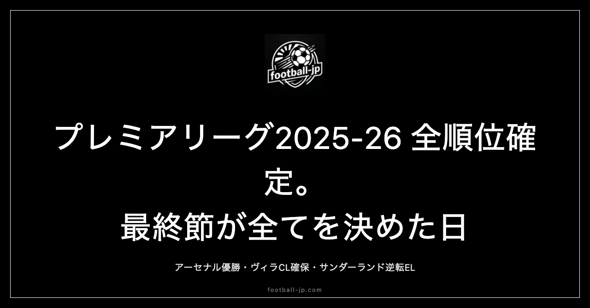

プレミアリーグ2025-26 最終順位の全貌——優勝・CL5枠化・サンダーランドのEL確保、降格3クラブの構図
2026年5月24日（現地時間）、プレミアリーグ2025-26シーズンの第38節が全会場で一斉に終了した。アーセナルの優勝は前節に確定済みだったが、2位以下のCL出場権争い・EL・ECLのラインは最終節まで流動的だった。加えて今季は、アストン・ヴィラのEL優勝に伴うCL出場枠の5枠化という構造的特殊事情が全体の順位表に影響を与えた。20クラブの確定順位と各ゾーンの決着を整理する。

確定順位一覧（第38節終了時点）
第38節終了後の確定順位は以下のとおりである。
- 1位 アーセナル 85pt
- 2位 マンチェスター・シティ 78pt
- 3位 マンチェスター・ユナイテッド 71pt
- 4位 アストン・ヴィラ 65pt
- 5位 リヴァプール 60pt（CL5枠目）
- 6位 ボーンマス 57pt（EL）
- 7位 サンダーランド 54pt（EL）
- 8位 ブライトン 53pt（ECL）
- 9位 ブレントフォード 53pt
- 10位 チェルシー 52pt
- 11位 フルアム 52pt
- 12位 ニューカッスル 49pt
- 13位 エヴァートン 49pt
- 14位 リーズ 47pt
- 15位 クリスタル・パレス 45pt
- 16位 ノッティンガム・フォレスト 44pt
- 17位 トッテナム・ホットスパー 41pt
- 18位 ウェストハム 39pt（降格）
- 19位 バーンリー 22pt（降格）
- 20位 ウルヴァーハンプトン 20pt（降格）
6位以下の欧州出場権については、FAカップとCarabao Cupをともにマンチェスター・シティが制したため、カップ経由の繰り上がり枠が発生し、ELが6〜7位、ECLが8位に割り当てられる形となった。
今季固有の背景——CL出場枠が5に拡大した仕組み
2025-26シーズンのプレミアリーグを読み解く上で、まず押さえるべき前提がある。UEFAのルール上、あるリーグのクラブがUEFAヨーロッパリーグを制覇した場合、そのリーグには翌シーズン（または同シーズン）のCL出場枠が1つ加算される仕組みがある。
今シーズン、アストン・ヴィラがUEFAヨーロッパリーグを制した。これによってプレミアリーグのCL出場枠は通常の4から5に拡大した。5位のクラブが4位と同様にCL出場権を得るという、この「1枠追加」こそが今季の順位表全体の読み方を変える構造的な要因である。
特にリヴァプールの5位CL確保は、この仕組みなしには成立しなかった。ヴィラのEL優勝という「プレミアリーグ外の出来事」が、リヴァプールというプレミアリーグクラブの命運に直結した——という連鎖は、UEFAのルール設計が意図した通りに機能した最初の大きな実例といえる。
CL出場権ゾーン（1〜5位）の決着
1位アーセナル（85pt）は前節で優勝が確定しており、最終節はクリスタル・パレスとのアウェー戦を2-1で勝利してシーズンを締めた。アーセナルの優勝については別稿（アーセナル22年ぶりプレミア優勝）で詳しく扱っているため、本稿では2位以下の動向を中心に整理する。
2位マンチェスター・シティ（78pt）は最終節にアストン・ヴィラを迎えてホームで1-2の敗戦。78ptでの2位確定となった。昨季と比較して勝ち点を大幅に落としたシーズンではあったが、それでも2位でCL出場権を確保した点にクラブとしての底力が表れている。守備の立て直しと攻撃の再設計は、来季へ向けた急務となる。
3位マンチェスター・ユナイテッド（71pt）は最終節のブライトン戦（アウェー）を3-0で快勝し、71ptで3位フィニッシュ。前季はCL出場権を逃していたが、今季はシーズンを通じて安定した成績を維持し、CL復帰を果たした。3-0の快勝という最終節の内容が、今季のチーム状態を象徴している。
4位アストン・ヴィラ（65pt）は今節最大の注目カードとなった。アウェーでマンチェスター・シティと対戦し2-1で勝利。65ptで4位を確定させた。第37節終了時点で62ptの4位だったヴィラは、5位リヴァプールとの差が僅かであり、引き分け以下なら4位を失う可能性があった。自力で勝ち切り、EL優勝に加えてリーグ4位でのCL出場権確保という「ELとCLのダブル達成」を成し遂げた。数年前まで降格争いを繰り返していたクラブが、欧州を制してCLも掴む——この変貌は今シーズン最も大きな軌跡の一つだ。
5位リヴァプール（60pt）は最終節のブレントフォード戦（アウェー）を1-1の引き分けで終え、60ptで5位確定。前述のCL5枠化によってCL出場権を獲得した。前季の勝ち点90近くから60ptへの急落は、監督交代と主力の入れ替えによる移行コストが要因とみられる。「王者翌年のCL圏外落ち」という最悪シナリオは、ヴィラのEL優勝という外部要因によって回避された格好だ。
EL出場権ゾーン（6〜7位）——ボーンマスとサンダーランド
6位ボーンマス（57pt）は最終節をホームでノッティンガム・フォレスト相手に1-1の引き分け。57ptで6位に着地し、EL出場権を確保した。ボーンマスにとってこれはクラブ史上初の欧州カップ戦出場に相当する。2000年代に財政破綻寸前まで追い込まれた時期を経て、2015年に初昇格を果たしてから定着してきた中堅クラブが、欧州の舞台に立つ。中規模予算で持続可能な強化を続ける経営モデルの正しさを、この結果が示している。
7位サンダーランド（54pt）こそ、今シーズン最終節が生んだ最大のドラマだ。サンダーランドは今季プレミアリーグに昇格してきた昇格組であり、「残留できれば御の字」という大方の見立てを完全に覆した。
第37節終了時点で8位付近につけていたサンダーランドがEL出場権を手にするには、最終節での自力突破が条件だった。対戦相手は10位チェルシー——資金力と選手層でリーグ上位クラスのクラブである。結果は2-1の勝利。この直接対決の勝利によってサンダーランドは順位を7位に押し上げ、54ptでEL出場権を確定させた。
昇格1年目でEL出場権を獲得したケースは近年のプレミアリーグでは極めて稀であり、チェルシーという格上を倒しての逆転確保という経緯も含め、今シーズン最終節が生んだ結末として記憶に残るものになった。
ECL出場権（8位ブライトン）と三笘薫の今後
UEFAヨーロッパ・カンファレンスリーグ（ECL）出場権は8位ブライトンに与えられた。Carabao CupをシティがFAカップと同様に制したため、カップ経由のECL繰り上がり枠が発生し、8位がECL出場権を確保する形となった。
8位ブライトン（53pt）の最終節はマンチェスター・ユナイテッドとのアウェー戦で0-3の完敗。53ptで8位フィニッシュとなった。三笘薫は5月10日のウルブズ戦でハムストリングを負傷し、最終節への出場は叶わなかった。
今季の三笘は前半戦からコンディションが整った時期のパフォーマンスが際立ち、12月〜2月にかけては月間ベストゴール候補に挙がる場面もあった。一方で1月以降の長期離脱がチームの失速と連動した側面は否定できない。三笘がフルシーズン出場できていれば最終順位はどう動いたか——その問いを残す年になった。
ブライトンが離脱期間を抱えながら8位でECL出場権を確保したことは、クラブの選手層と組織力の証明でもある。W杯2026開幕（6月11日）まで残り数週間。三笘がグループステージに間に合うかは現時点で不透明だが、日本代表が決勝トーナメントを勝ち進んだ先での出場可能性は残っている。
三笘薫の最新スタッツは三笘薫スタッツページで随時更新している。
降格3クラブ——ウェストハム・バーンリー・ウルブズ
18位ウェストハム（39pt）の降格は、今シーズンで最も切ない結末の一つだ。最終節でリーズを相手に3-0の快勝を収め39ptに積み上げたが、17位に届かなかった。17位残留には「ウェストハムが勝利し、かつトッテナムが勝ち点を落とす」という条件が必要だったが、トッテナムは最終節を41ptで終えた。2ptの差が残留と降格を分けた。
最終節で3ゴールを挙げながら降格が確定するという結果は、シーズンを通じた勝ち点の積み方の問題を凝縮している。今季37試合で65失点超という守備崩壊こそが、勝ち点を積み上げられなかった直接的な原因だ。来季はチャンピオンシップ（2部リーグ）での再建が課題となる。
19位バーンリー（22pt）の降格は4月22日に確定済みだった。最終的な勝ち点22pt、得点37に対して失点74超という数字は守備の機能不全を示している。昇格1年目としてのプレミアリーグの壁に正面からぶつかった形のシーズンになった。
20位ウルヴァーハンプトン（20pt）の降格確定は4月20日。最終勝ち点20pt、26得点・67失点超・得失点差マイナス40超という数字はリーグ最低水準に位置する。昨季も残留争いを経験したクラブが今季は序盤から浮上の糸口をつかめなかった。主力の流出と補強の機能不全が積み重なり、シーズンを通じて構造的な問題が解消されなかった。
プレミアリーグ在籍日本人3選手のシーズン総括
今シーズンのプレミアリーグには三笘薫（ブライトン）、遠藤航（リヴァプール）、冨安健洋（アーセナル）の3名の日本人選手が在籍した。
三笘薫はECL出場権を確保した8位クラブの主軸として前半戦を牽引したが、5月10日の負傷により最終節を戦えなかった。コンディションが安定していた時期のパフォーマンスはプレミアリーグ屈指の水準にあった一方、負傷離脱の長さがシーズン全体の評価を難しいものにしている。W杯2026での起用については、グループステージの日程との兼ね合いが焦点になる。
遠藤航はCL出場権を確保した5位クラブのメンバーとしてシーズンを終えたが、今季はリーグ出場機会が限られた年だった。リヴァプールの監督交代・戦術的再編の過渡期とスクワッド競争の激しさが絡み合った結果であり、チームとしての結果（5位CL確保）と個人の立場の難しさが同居したシーズンになった。W杯26人メンバーへの選出は確定しており、代表での主力としての働きが注目される。
冨安健洋は今季リーグ出場数が6試合にとどまった。負傷の影響が長引いたシーズンだが、1位・優勝クラブのアーセナルのメンバーとしてシーズンを終えた。試合勘という観点での不安要素はあるものの、最高の環境下で過ごした経験がW杯本番にどう活きるかは別の問いだ。アーセナルで22年ぶりの優勝を経験した選手として北米の地に立つことになる。
2025-26シーズンを振り返る3つの軸
2025-26プレミアリーグを総括するとき、記憶に残るポイントは3つある。
第一は「アーセナルの22年ぶり優勝」。85ptでの圧倒的な1位フィニッシュは、クラブ再建の完成型を示した。この詳細は別稿に譲る。
第二は「アストン・ヴィラのEL優勝とCL出場権確保の同時達成」。ELを制したうえでリーグ4位として最終節でもCLを確保した事実は、数年前に降格争いを繰り返していたクラブとは思えない達成だ。さらにそのEL優勝がプレミアリーグ全体のCL出場枠を5に拡大し、リヴァプールの5位CL確保という別クラブの命運まで動かした——この連鎖こそが今季の順位表を読む上で最も重要な構造的事実である。
第三は「昇格組サンダーランドの逆転EL確保」。最終節でチェルシーを撃破して7位に滑り込んだこの結末は、プレミアリーグの最終節が持つ固有のドラマ性を体現している。昇格初年度でのEL出場権獲得という事実は、長期間にわたって2部に沈んでいたクラブにとって歴史的な到達点だ。
38節380試合のシーズンが終了した。三笘薫、遠藤航、冨安健洋の3名を含む各国代表選手は今後、W杯2026の準備へと移行していく。6月11日の開幕まで17日——長いリーグシーズンを終えた選手たちが、次はワールドカップのピッチに立つ。
W杯2026の日本代表情報はW杯日本代表特集ページで随時更新中だ。グループF（日本・オランダ・スウェーデン・チュニジア）の試合日程や対戦情報も掲載している。